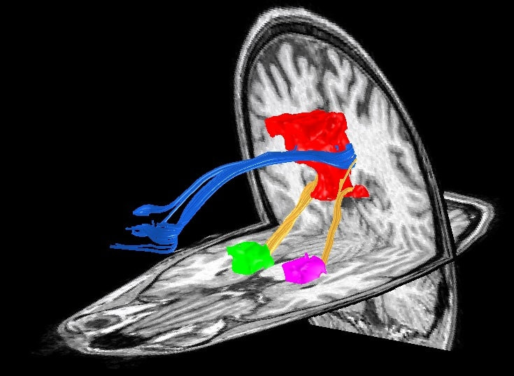

|
BY NILS MUHLERT Figure 1. Mike Greicius, OHBM Program Chair 2016-17 Every year OHBM receives thousands of abstracts, each a snapshot of the intensive work of individuals or teams of scientists. Contained within this bumper crop of science are telling replication studies, novel experimental designs, methodological advances and fresh insight into the workings of the human brain. This harvest, whilst welcome, necessitates difficult decisions about which prize specimens to highlight as talks, and which to promote through posters. For those of us yet to work on program committees this process of selection can seem opaque - we can perhaps predict the established trends and exciting developments from year to year, but how do committees decide which emerging fields will pique the interests of the majority of OHBM attendees? Here we find out the decisions that were made in deciding on the OHBM 2017 program, through discussion with the Program Chair and Stanford Neurologist, Mike Greicius. Nils Muhlert (NM): First, can you tell us about your career path into Neurology and Neuroimaging? Mike Greicius (MG): I was a French major as an undergraduate but was able to get my pre-med classes done at the same time. I went to Columbia for medical school but was allowed to defer my matriculation for 1 year so that I could "teach English" in Prague and Paris, which, in fact, I sort of did. Taking a year off allowed me to hit medical school refreshed. It was as a second-year medical student at Columbia that I had my epiphany about neuroscience. I was in a lecture on aphasia and the professor, Richard Mayeux (now the chair of Neurology at Columbia), had a videotape showing a conversation with one of his Wernicke's aphasia patients. I was thunderstruck and knew, from that point, that I wanted to be a behavioral neurologist. In my head I summed it up as something like "why study the kidney or the liver when you can study the one organ that talks back to you?". I did my one-year of internal medicine at Columbia and then residency training in Neurology at Harvard, which is a fondly remembered blur. Fondly, mainly because it is blurry. At the time I was rather zombie-like, overworked, underpaid, etc. Those were three tough but formative years. In 2000, on finishing my residency I came to Stanford for an fMRI fellowship (with Allan Reiss and Vinod Menon) which I combined with a behavioral neurology fellowship (done at UCSF with Bruce Miller). The sun came out and everything changed. I was delighted to learn that my wife still loved me and that I could now spend time awake with my then 2-year old son. My big resting-state epiphany actually happened at my very first conference, which happened to be OHBM 2001 in Brighton. That was my first taste of resting-state fMRI. The Biswal paper had been published in 1995 but I had had no exposure to imaging research in residency. I recall sitting in my hotel's pub sponging insights from Dietmar Cordes, whose group at Madison was doing a lot of the early fundamental methods work in resting-state fMRI. I was really blown away by the power of this approach and collared Vinod so that we could visit some of the posters together. When we got back to Stanford that summer we started thinking about how to adapt this approach to cognitive and clinical neuroscience questions. NM: And more recently you started combining resting state fMRI with direct stimulation of the anterior cingulate cortex. Can you tell us a bit about how this work came about and the effects that this stimulation produced? MG: The study stimulating the anterior cingulate cortex was one of my all-time favorites. Josef Parvizi is a friend and colleague of mine here at Stanford and he essentially created and now runs our research electrocorticography program. As a quick background, some patients with intractable epilepsy that does not respond to 2 or 3 anti-seizure medications may be candidates for surgical resection of small brain lesions that are the cause of their epilepsy. Often, such resections are essentially curative. As part of the assessment, patients come into the hospital for surgery to have electrodes placed on the surface of the brain and/or in deeper parts of the brain (like the hippocampus) using depth electrodes. Patients typically spend many days in the hospital as their seizure events are carefully recorded in the hopes of localizing a single focus from which all seizures begin. At Stanford, and many other centers, part of the clinical protocol is to stimulate each electrode in turn to see if stimulation triggers any aura-like symptoms in the patient or causes any suspicious activity on the recordings. For Dr. Parvizi’s cases, we started obtaining pre-operative resting-state fMRI scans so we could determine which electrodes were in which brain networks. Electrode placement is done strictly based on the clinical history and prior data (like EEGs and MRI scans) in an effort to cover suspicious candidate regions. In these two cases we happened to have electrodes in the dorsal anterior cingulate cortex in the heart of the "salience" network. I'd done some prior work on this network (led by Bill Seeley, the salience network guru [read the OHBM interview with Bill here - NM]) and had settled on the idea that the salience network is involved by any stimulus (internal or external) that alters the sympathetic nervous system. So high-demand cognitive tasks, emotional tasks, painful stimuli will all activate this network (which is why previous micro-literatures have tended to call it their own: the pain network, the cognitive control network, etc.). This was the first time we'd been able to get first-person reports from subjects whose salience network was stimulated. Both subjects describe a feeling of approaching a challenging situation and, in so many words, having to marshal the resources to prevail. I think this is what the salience network does. It both recognizes the challenge and also allocates resources (increased cognitive focus, increased heart-rate and blood pressure, dilated pupils to maximize visual input, etc) to overcome the challenge. I love the line in the video of patient 1 where he is describing this strange set of feelings and notes that his heart feels like it's beating faster and he asks Dr. Parvizi if we are recording his heart rate. We were and it did increase some. I just loved how invested he was in the whole procedure. I felt like we should have made him a co-author. In any case, it really points to the invaluable role of human subjects in neuroscience research. NM: Turning to your work in Alzheimer’s disease - you recently used PET imaging to demonstrate that amyloid deposition in early Alzheimer’s rarely occurs in the same regions as hypometabolism. Was this lack of co-occurrence predicted by prior theories of Alzheimer’s - if not, what implications might it have? MG: The Alzheimer's field is slavishly devoted to amyloid plaques. Our paper in Brain showing the general lack of correlation between regions with high amyloid plaque deposition and those with low glucose metabolism was an effort to free people of their reflexive tendency to associate amyloid plaques with local neural dysfunction. Good old-fashioned clinicopathologic studies have repeatedly made the case that the location of amyloid plaques at autopsy does not correlate well with brain regions that were affected in life (based on functional anatomy). These same studies have made a strong case that tau pathology (neurofibrillary tangles) is the better regional correlate of neuronal dysfunction. Humans are visual beings, however, and the amyloid PET imaging revolution eclipsed some of these old studies. To be clear, amyloid PET imaging is an unbelievable research and clinical tool and constitutes one of the major advances in Alzheimer's disease research in the last 30 years. In addition, there is no getting around the critical, probably primary, role of amyloid in Alzheimer's pathogenesis. However, the specific species of amyloid (plaques versus smaller oligomeric aggregates of the peptide) that drives the pathology remains in question. Our study (like the numerous clinicopathologic studies that preceded it) makes the case that the relevant neurotoxic species of amyloid is probably not the plaques. NM: Which figures in your career have inspired you? MG: Human figures? Manuscript figures? Probably not financial figures. Human figures include Richard Mayeux and Bruce Miller (as mentioned above). Allan Reiss was a great mentor and in particular helped me learn how, as a PI, to let a trainee run with something that they are passionate about even if it is a good ways off the topic they have been assigned. Vinod Menon was also a great mentor and really helped me dive into resting-state fMRI. I also get inspired by peers. Bill Seeley as mentioned, Mike Fox, Catie Chang, Steve Smith, Heidi Johansen-Berg, Vesa Kiviniemi, and Christian Beckmann among many others have all helped my thoughts on brain connectivity and plasticity evolve. Then, and this is not false modesty, I have benefitted considerably from several trainees. Andre Altmann and Jonas Richiardi really helped me shift gears from an imaging lab to an imaging genetics lab and lately, at times, to a straight genetics lab (with additional trickle-up education coming from Valerio Napolioni, a genetics postdoc in my lab currently). Manuscript figures: Figure 2 (below) is my favorite, mainly because it features my wife's cingulum and descending cingulum bundles which I find incredibly beautiful.  Figure 2. Mike Greicius’ favourite figure (the cingulum and descending cingulum bundles). NM: What led to you getting involved in the OHBM Council?
MG: I've been to OHBM every year since 2001. I love the community, I love the science, and I love the cities we get to visit. The other conferences I go to (and which I will not name) tend to be a bit stuffier; people wear ties and occasionally (and unironically) bow-ties. At some point I was encouraged to put my name on the slate as a candidate for Council. I was roundly pummeled in my first attempt but with some salience-stimulation and pride-swallowing was encouraged to run a second time where my perseverance was rewarded with another sound beating. In my third round I was narrowly elected to this august assembly. NM: What challenges are there in putting together the program for OHBM? MG: Serving on the Program Committee is a serious undertaking. We end up doing a lot of work in a short period of time. We have a few weeks to review all abstract evaluations (about 2500), educational course proposals (20 or so), and symposia proposals (more than 40). The main program building takes place each February over 2 days in a fun but somewhat chaotic in-person meeting where people make the case for (or against) the selection of education courses, symposia, and specific abstracts for oral presentations. We are also responsible for getting the Talairach speaker and keynote speakers selected and lined up (but this is usually wrapped up by September). The ideal program is challenging to build because numerous variables need to be considered including novelty, rigor, speaker diversity, and topic diversity among others. The make-up of the program committee needs to reflect these challenges and that can be challenging as well (but I assure you we are working on it and making some measurable progress). NM: Last, what do you see as the emerging research trends in your field? (and can you give our readers a hint as to what this year's main themes for OHBM might be?) MG: In my field, Alzheimer's disease, the biggest trend is molecular imaging (amyloid but also tau PET with some increasing enthusiasm for PET that can measure activated microglia as well). This work tends to be quite clinical and so is not well-represented at OHBM currently (something I'd like to change in my remaining year on the program committee but it's a tall order). In terms of brain networks, I am excited about ongoing efforts to bridge the gap between cell-level molecular pathways and systems-level distributed networks. Network plasticity (following behavioral or pharmacologic interventions) is also an area I find compelling. I'm happy to report that these themes will both be well-represented at OHBM 2017 in Vancouver. NM: Many thanks for your insight!
0 Comments
Your comment will be posted after it is approved.
Leave a Reply. |
BLOG HOME
Archives
October 2022
|
 RSS Feed
RSS Feed